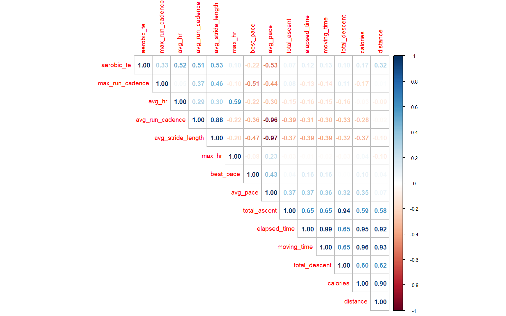
Assessing Fitness
Summary
We have identified five critical variables for measuring fitness: average pace, average heart rate, distance, total ascent and aerobic total expenditure.
Both the runners show positive trends overall, with Collie excelling in technical efficiency and consistent progression like maintaining better speed, stride length and aerobic total expenditure, whereas Hound shows higher energy output with varying improvements for cumulative distance and energy expenditure over the years.
Collie does well in technical metrics like aerobic total expenditure, average speed, average cadence, stride length, with consistent training patterns and steady elevation gains, focused on trail running with lower injury risk.
Hound has higher total distance and caloric expenditure with variable training intensities and stronger peak performances, focused on track and street running with higher injury risk.
We recommend Hound for coaching for fitness, since he shown greater optimization potential, strong adaptation skill set, and better room for structured growth through periodization training and recovery management.
Understanding Fitness
In order to understand fitness, we first need to observe our variables that we are working with, lets take a brief look at how our variables work with each other. We will be analyzing Correlation between our variables through the Spearman Method.
In order to understand fitness, we first need to observe how our variables interact. Since we are working with continuous performance data, it is essential that we analyze the relationships between key variables. In this context, we focus on detecting monotonic relationships—for example, the correlation between faster paces and higher cadence. To achieve this, the Spearman correlation method is well-suited for capturing these associations since we can see which measurements have a strong correlation between each other, both positive and negative in a range of [-1, 1].
This analysis allows us to better understand how the variables contribute to defining fitness and help guide our approach to evaluating overall performance.
This correlation analysis reveals clear monotonic relationships, such as the strong correlation between average stride length and average pace. We’d expect faster runners to have shorter stride lengths because increasing speed is often achieved by increasing cadence, or steps per minute, rather than stride length. By taking quicker, shorter strides, runners minimize ground contact time, enhance efficiency, and reduce impact on their joints, which contributes to maintaining higher speeds
Distributions
Next we are going to analyze the distributions of our variables in order to capture if there is any abnormalities.

From the analysis of our distributions, we can clearly see that we are working with data from two different runners, with a noticeable bi-modal relationship in elevation, average heart rate, max run cadence, and stride length. We can also see that there are significantly right-skewed variables especially those related to distance, time, elevation, and calories. Indicating that while most activities are moderate intensity, a few activities are significantly longer, higher in elevation, or more intense.
An important thing to note is the presence of outliers in our data, which suggest different running conditions or exceptional efforts being made by the runners in our data.
How does our data behave?
Here we are trying to understand how our data behaves, specifically we are trying to see if our data exhibits stationarity, seasonality, multicollinearity, and normality.
Summary of all tests P-values:
Variable Normal_p_value adf_p_value KP_Level_p_value KP_trend_p_value
aerobic_te 0.0033 0.0185 0.0100 0.0397
avg_hr 0.0000 0.0100 0.1000 0.0100
avg_pace 0.0000 0.0212 0.0100 0.0100
avg_run_cadence 0.0000 0.0100 0.0100 0.0100
avg_stride_length 0.1978 0.0228 0.0100 0.0100
best_pace 0.0000 0.0100 0.0100 0.0100
calories 0.0000 0.0100 0.0100 0.0199
distance 0.0000 0.0100 0.0100 0.1000
elapsed_time 0.0000 0.0100 0.0100 0.0242
max_hr 0.0004 0.0761 0.0281 0.0100
max_run_cadence 0.0000 0.0100 0.0100 0.1000
moving_time 0.0000 0.0100 0.0100 0.0247
total_ascent 0.0000 0.0100 0.1000 0.1000
total_descent 0.0000 0.0100 0.1000 0.1000Since our Jarque-Bera test results show a low p-value for all variables except for Average Stride Length, we must reject the null that our data is normally distributed, and assume it is not normal. However, after analysis of our Correlation Matrix, we are making the decision to not use the following variables in our regression analysis: Average Stride Length, Moving Time, Max Heart Rate, Best Pace, and Maximum Run Cadence.
Given that our results from ADF indicate that the series could be stationary while the KPSS test suggests that non-stationarity remains, especially within the trend component. It is clear we are going to need to do further analysis on trend and seasonality.
Understanding our remaining variables:
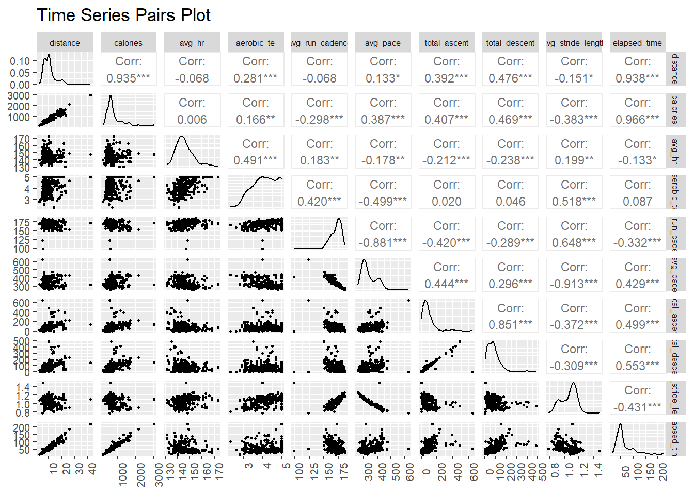
This pairwise correlation plot provides a more detailed overview of key running metrics interact with each other, highlighting relationships that can inform performance evaluation and training strategies. Some of the most important insights that we can gain from this chart are the following:
There are positive relationships between the following pairs:
Distance and Calories (0.935), Total Ascent and Distance (0.476), Total Ascent and Total Descent (0.851)
What we can gain from understanding these positive relationships is that as a runner covers more distance, calorie expenditure increases proportionally. When our runners take on more elevation gain, they also tend to cover longer distances. Suggesting a pattern of tackling challenging terrains during longer runs. Lastly, we can analyze that our runners typically are returning to their starting elevation, which is typical in looped or hiking trails.
There are interesting negative correlations between the following pairs:
Average Stride Length and Total Descent (-0.648), Aerobic Training Effect and Average Pace (-0.299)
We can also understand that our runners typically are taking shorter steps when going downhill, likely to maintain control and balance. There is also a noticeable effect on our runners pace when they engage into more intense training sessions.
Seasonality:
Now that we have a more clear picture on Stationarity, Multicolinearity, and Normality. It is time for us to understand the seasonality of our variables, for this analysis, we have decided to analyze: Distance, Total Ascent, Average Pace, Average Run Cadence, and Aerobic TE.
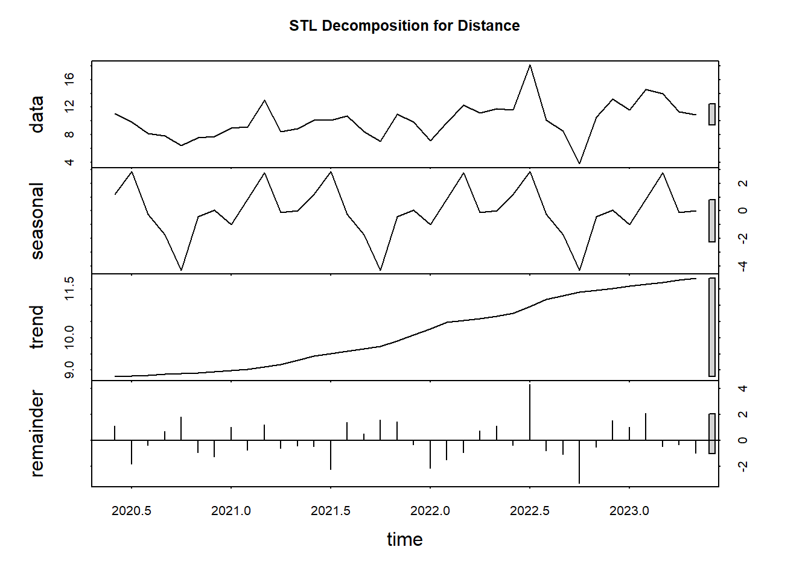
Trend: The upward trend indicates that our runner’s have a steady improvement in endurance, as they are consistently able to cover more distance over time. This can be seen as a positive indicator of increased cardiovascular fitness.
Seasonality: There is a recurring seasonal pattern where distance increases and decreases at specific intervals, more specifically our runners cover more distance in the summer months and less distance in the winter months.
Residuals: The occasional outliers indicate that our runners may have had some periods of exceptional performance or periods where external factors may have impacted the runner’s performance.
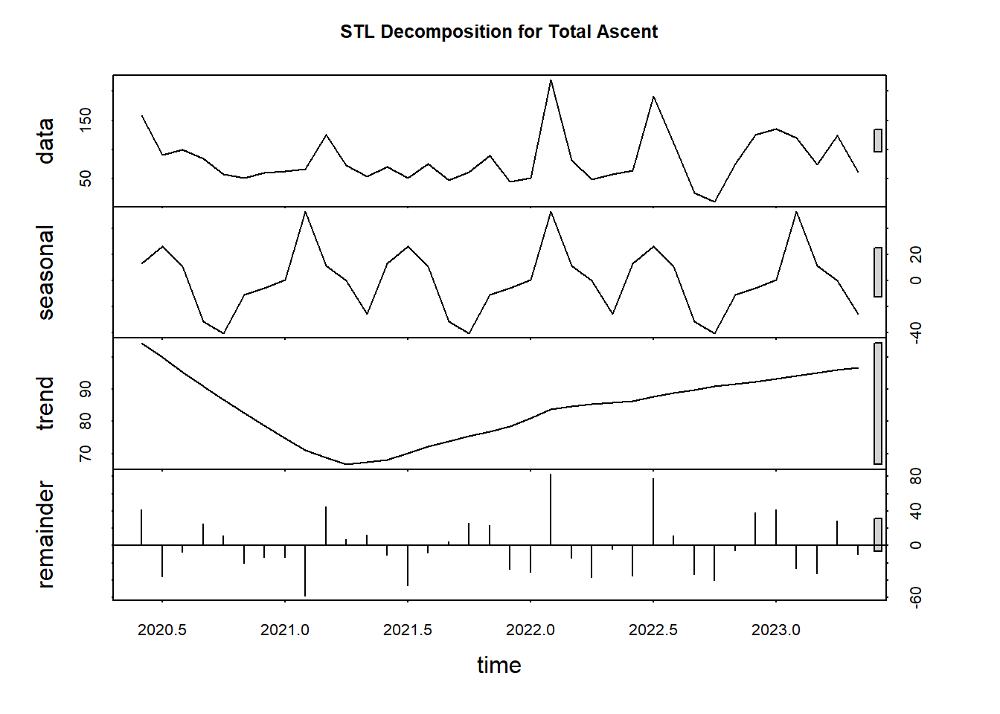
Trend: The trend suggests that our runners are gradually incorporating more challenging routes over time, this is important because it improves muscle strength and endurance.
Seasonality: There are visible seasonal peaks, which may correspond to our runners favoring trail running during certain times of the year, the most noticeable peaks are nearest to the middle of the year (summer time).
Residuals: Outliers in the residuals are likely capturing exceptional efforts on more challenging terrain (i.e Mountain climbing)
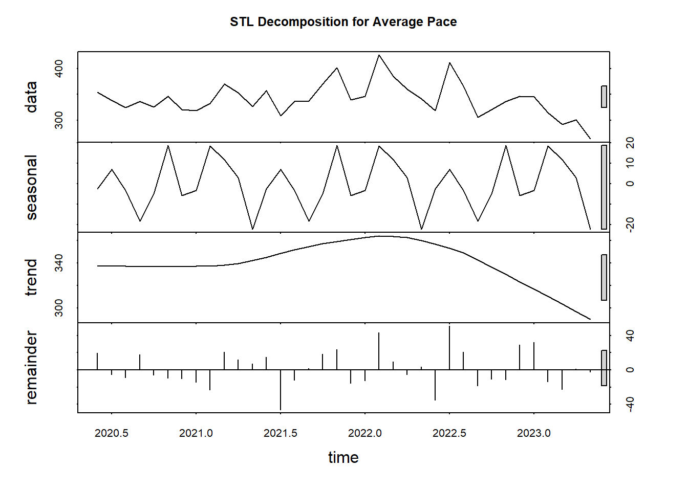
Trend: The overall trend tells us that our runners have had a gradual decrease in pace, indicating that they are getting faster over time.
Seasonality: Pace is fluctuating in a predictable pattern, with noticeable decreases in the summer time and increases near winter. This makes sense because our runners are likely not performing races in the winter time and they have a much better environment to run in without snow.
Residuals: Here the residuals capture moments of unusually fast or slow performances, indicating that our runners have performed in races and or challenging terrain.
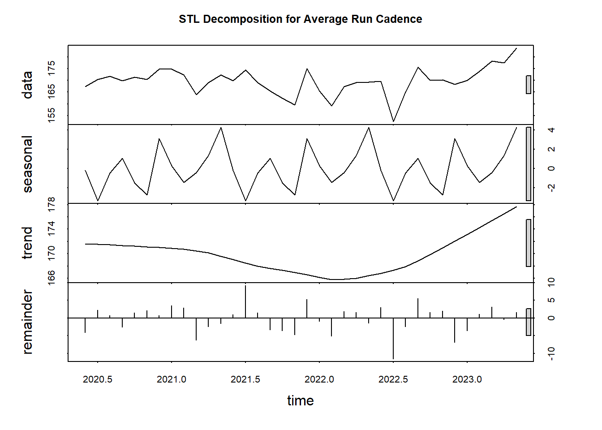
Trend: The Trend shows a slow upward movement, which suggests that our runners are slightly increasing their cadence overtime. This is good since a higher cadence generally reflects improved running efficiency and overall better running mechanics.
Seasonality: There is a repeating cycle in cadence, explaining that our runners undertake periods of more intense and structured training in the winter months. Suggesting that our runners gain a greater focus on improving running mechanics to pursue more intense events, such as races or hiking.
Residuals: Highlighting the irregularities in cadence during mid years show interesting information, we can see that our runners did better in their training in 2021 compared to 2022.
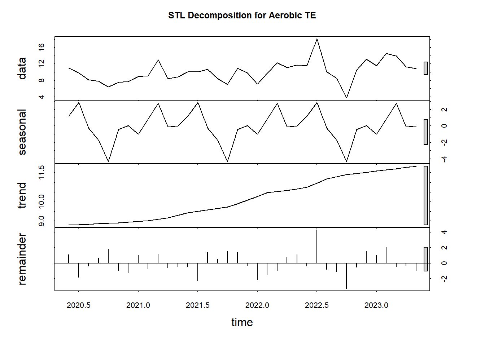
Trend: The trend shows that our runners are sustaining high levels of cardiovascular effort over time, which suggests that aerobic capacity is being steadily challenged and improved.
Seasonality: The seasonal component reflects variations in the intensity of training. We can see that there is clear periods of high-intensity training in the summer time, with drop offs after followed by increases back to the peak indicates that our runners may be training for a race or taking it easy until the weather clears up.
Residuals: The outliers in the residuals show us where the training effect was much high or lower than expected, indicating either highly intense efforts or light recovery runs.
Defining Fitness
Fitness: is the ability to maintain or improve cardiovascular endurance and muscular efficiency, with a focus on maintaining or enhancing key performance metrics (pace, heart rate, distance, and elevation gain) while minimizing physiological strain over time. Fitness reflects the ability to adapt to more challenging environments (elevation, distance) while minimizing effort (heart rate) and achieving higher performance (pace). Improvements in fitness should also indicate a greater ability to recover from intense physical activity, which demonstrate enhanced aerobic capacity and muscle endurance.
Our Most Important Variables for Tracking General Fitness are:
Aerobic Training Effect: is a primary indicator of cardiovascular impact, Aerobic TE should reflect the cumulative impact of multiple factors, including pace, heart rate, distance, and elevation. An improved fitness level would allow individuals to reach a high Aerobic TE with reduced heart rate and faster pace.
Heart Rate - Should decrease at similar intensities as cardiovascular efficiency improves
Pace - Should ideally get lower (faster speed) as fitness improves, even on more challenging terrains or over longer distances.
Distance and Calories - which measure the total activity level and energy expenditure, which should increase as fitness improves.
Elevation Gain- Tackling more challenging terrain indicates improved muscular strength and endurance.
Cadence - A higher cadence reflects better running mechanics and efficiency.
Stride Length - Maintaining or improving stride length indicates strength and mobility.
What we are looking for in terms of improvement over time:
Lower Heart rate for the same or greater distances.
Increased pace with reduced or stable heart rate.
Increased Distance or calories burned while maintaining or improving performance.
Handling more elevation with consistent or improved speed and effort.
Taking a look at how our Runners perform individually
Over the years:
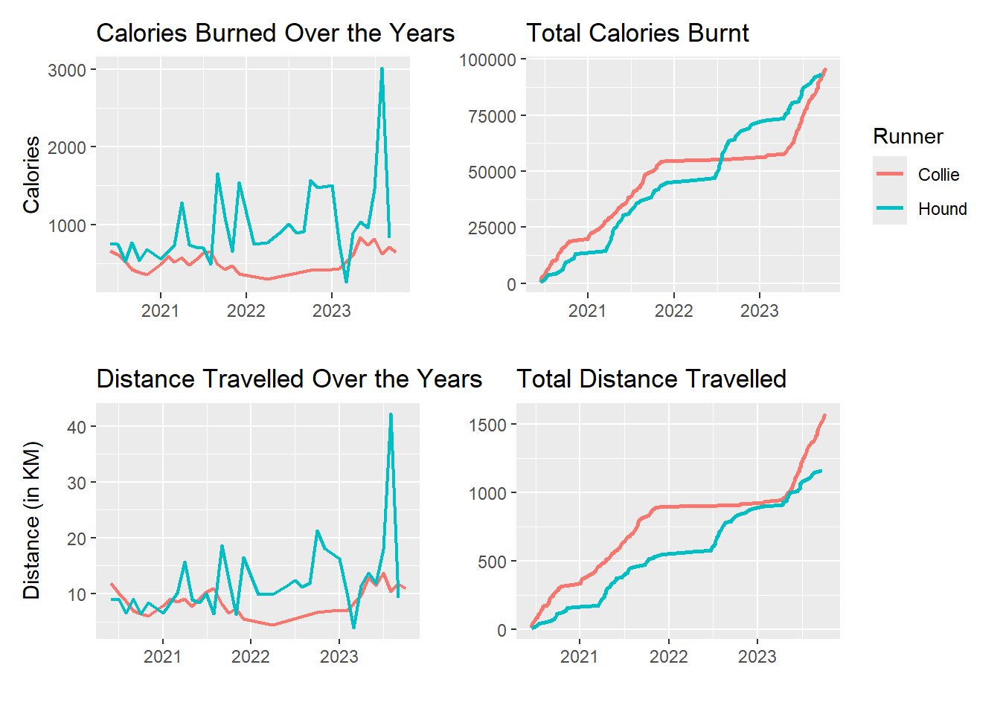
We can see from our analysis of Calories and Distance that Hound tends to have a more variable running pattern, with periods of high-intensity or longer runs mixed with lower-intensity periods. While Collie, likes to focus on a more steady and consistent running regimen. The spikes in Hound’s charts suggest that Hound is more likely to engage in intensive training, which can indicate that they would enjoy a strategy focused on periodic intense efforts. While Collie’s consistency can reflect a more sustainable or gradual training approach.
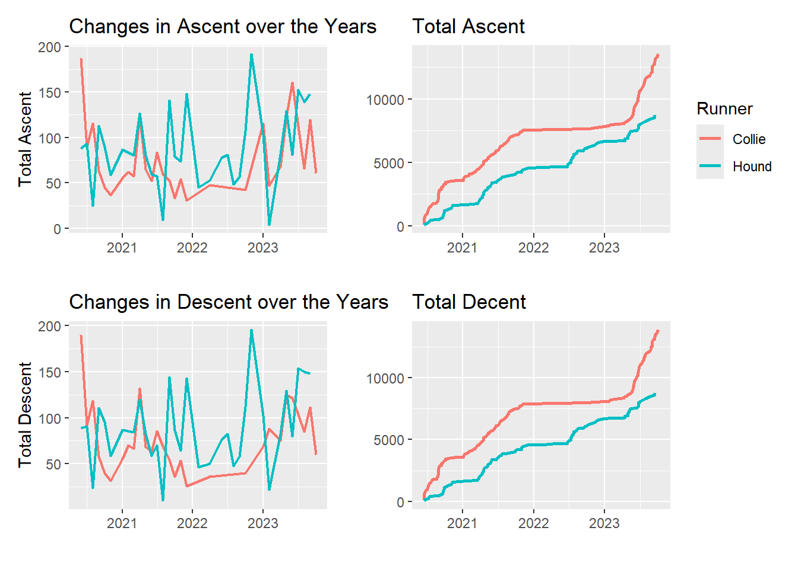
Collie continues to appear to have a consistent effort when it comes to elevation gain, consistently accumulating elevation, suggesting that they enjoy more long-term endurance training on hilly or elevated routes, this is also clear when we analyze their Activity types, Collie predominantly enjoys trail running over anything else. While Hound tends to engage in more intense efforts for higher ascent in individual runs, overall, these efforts haven’t resulted in as much elevation gain over time as Collie’s more consistent approach. Examining Hounds activity types, it is clear that Hound doesn’t engage in trail running as much as Collie, they prefer to do more track running, street running, and work on the treadmill.
It is clear that Collie has an advantage in terms of total ascent, indicating that a steady focus on elevation during runs would be a good way to coach them. While Hound may enjoy a more interval-based approach to training on inclines.
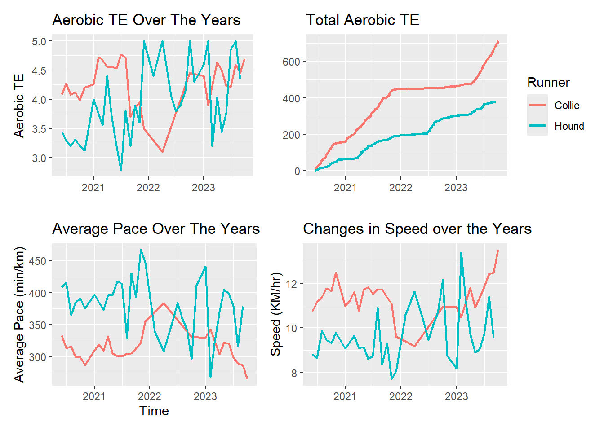
With the analysis of speed and Aerobic training effect, we can see that Collie remains consistently achieving a higher TE over the years compared to Hound with fewer fluctuations. This is more pronounced when we get the cumulative total of aerobic TE, suggesting that Collie has a more moderate and consistent level of aerobic challenge throughout his training sessions. When compared to Hound who has a more variable yet gradual increase of cumulative aerobic TE.
When taking a look at the pace and speed of our runners, there is an interesting insight showing that despite Collie’s approach to more trail running, they maintain a lower pace than Hound on average and this translates into a higher speed as shown in the above chart.
Performance Overall
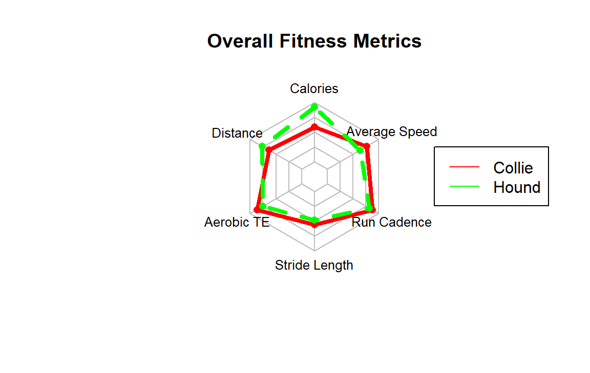
Taking a look at the overall fitness metrics of each runner:
Collie overall outperforms Hound in key fitness metrics such as Aerobic TE, Average Speed, Run Cadence, and Stride Length, which are the most critical indicators of overall running fitness, cardiovascular endurance, and efficiency.
Hound overall excels in Calories burned and distance traveled, suggesting a higher energy output and endurance compared to Collie, but it is clear that Hound might benefit from a more structured training focused on aerobic improvement and speed to match Collie’s overall fitness levels.
Performance Over the years
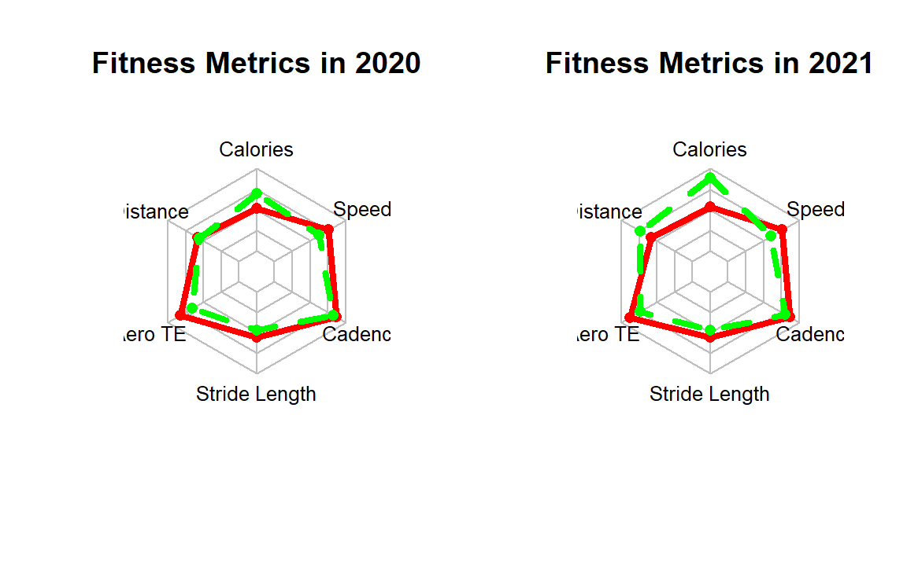
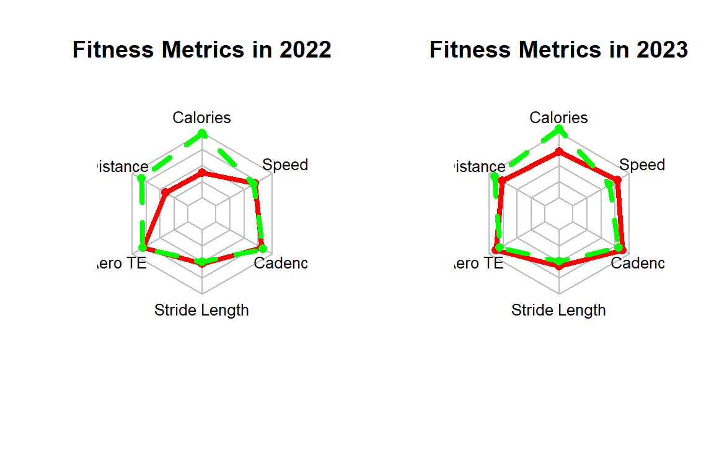
We can see that throughout the years Collie has maintained a better speed, stride length, and higher Aerobic TE training. However, It seems as if Hound has maintained an overall higher energy expenditure and has had slightly more distance traveled than Collie, with the exception of 2022 where it is observed that Collie was taking it more easy with their running activities.
In terms of improvement, it is clear that both Collie and Hound have made improvements to both their efficiency, running mechanics, and endurance. The abilities in both of our runners are clearly getting better and they both have a dedication to training albeit one is more consistent in terms of Aerobic TE and growth
How does our Model Perform?
We have decided to make our model based off of Aerobic TE being the dependent variable and with Average Pace, Average Heart rate, distance, and total ascent being the independent variables. We will be running our models based on this order in terms of \(R^2\) (highest to lowest), here are the following results.
# A tibble: 4 × 5
model output r.squared adj.r.squared p.value
<chr> <list> <dbl> <dbl> <dbl>
1 aerobic_te ~ avg_pace <lm> 0.271 0.269 0
2 aerobic_te ~ avg_pace + avg_hr <lm> 0.437 0.432 0
3 aerobic_te ~ avg_pace + avg_hr + dista… <lm> 0.582 0.577 0
4 aerobic_te ~ avg_pace + avg_hr + dista… <lm> 0.618 0.612 0We can see that all of our models have significance, however the final model including all of our variables have the highest explanation of \(R^2_{adjusted}\) we can take a closer look at our final model to see if there is the presence of multicolinearity, if our terms are significant, and if our Residuals follow the assumptions of a liner regression.
# A tibble: 5 × 5
term estimate std.error statistic p.value
<chr> <dbl> <dbl> <dbl> <dbl>
1 (Intercept) -0.155 0.579 -0.267 7.89e- 1
2 avg_pace -0.00716 0.000527 -13.6 3.27e-32
3 avg_hr 0.0419 0.00363 11.6 2.82e-25
4 distance 0.0428 0.00582 7.35 2.52e-12
5 total_ascent 0.00184 0.000366 5.02 9.71e- 7Taking a look at the P-values of our predictors we can see that they all hold statistical significance, meaning they all contribute meaningfully to predicting Aerobic TE. The key Findings of this model suggest that increasing distance, heart rate, and elevation gain (total ascent) during training can enhance Aerobic training effects, while having slower paces can reduce it.
# A tibble: 4 × 2
Predictors VIF
<chr> <dbl>
1 avg_pace 1.22
2 avg_hr 1.06
3 distance 1.19
4 total_ascent 1.43Judging from our VIF results we can see that our model seems to have very low multicollinearity; these values lay within the boundary of 1 < VIF < 5, which is within the typical acceptable limits and are generally not problematic.
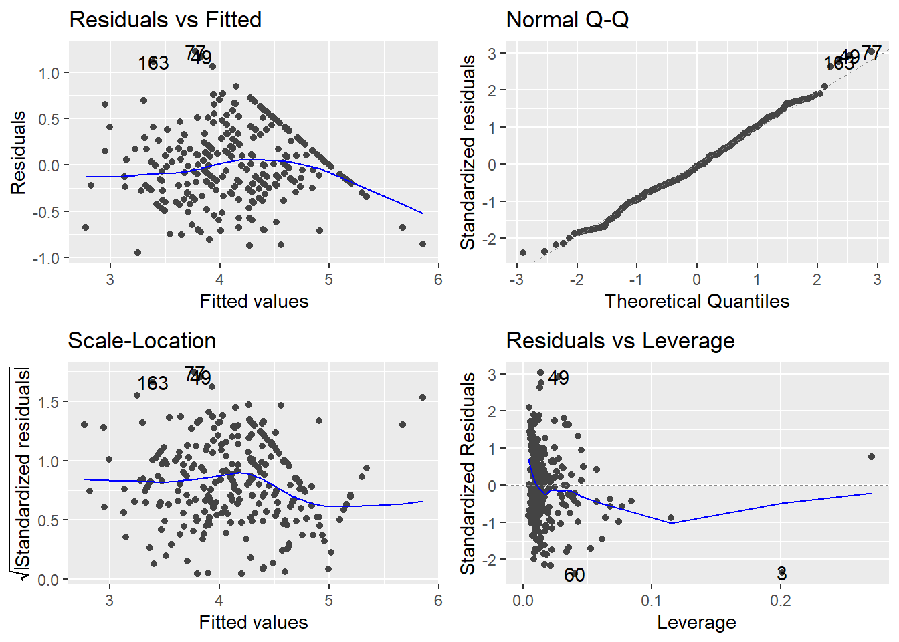
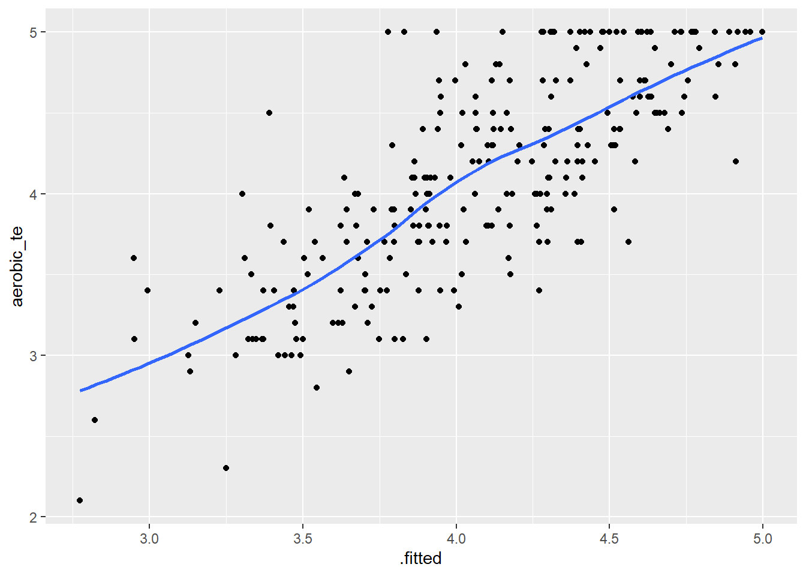
Analyzing our residuals gives us some insights to our model, we can see that with the curved pattern in the residuals vs. fitted plot, our model may benefit from polynomial or interaction terms. In the Q-Q plot we can see that for the most part our residuals are normally distributed with some drifting at the tails. The Scale-location plot shows that we have some heteroscedasticity in our model, and that there are a couple of influential points effecting our model.
Analyzing the specific points in the model shows that they are not outstanding outliers, they actually rather serve to explain the nature of Aerobic TE and how it can be skewed depending on a multitude of factors not explained in our model and data, such as hydration, sleep quality, and nutrition on the day of the run.
Recommendation
Based on our model, we would like to implement a training strategy that focuses on increasing distance, heart rate, elevation gain, while maintaining a faster pace. In the efforts to maximize aerobic training effect, which should improve overall fitness over time.
Hound shows variable training patterns compared to Collie. There are periods of high intensity workouts and low intensity workouts. Collie, on the other hand, shows sustained training progression. As mentioned earlier, this means that if you are looking to coach someone for high performance, Hound is a better candidate because he shows strong adaptation to intensive training and can handle different training loads. Downside of this is this indicates a higher injury risk for variable intensity workouts.
Collie has better baseline maintenance, consistent, steady training, and progression patterns. This is reflected through his consistent heart rates adhering to similar distances. This implies that he has consistent fitness levels throughout the years.
Hound has higher caloric expenditure by distance that implies greater work intensity in his workouts which also reflects his higher heart rate. On the other hand, Collie has consistent energy usage in his workouts.
On the basis of these conclusions, Hound is a viable option for coaching over Collie. Primarily, because Hound’s variable patterns and peak loads in fitness parameters could be optimized to result in consistent fitness levels. This can be done through structured coaching in a more controlled environment, which Hound prefers after analyzing his main activity types. We expect to see more improvement in Hound’s overall fitness improvements than Collie’s as a result of this. Not to say that Collie cannot be coached, however, there is major room for growth from Hound.